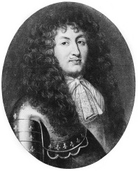

Kral XIV. Louis (1638-1715), sadece dört yaşındayken 1643’te kraliyet mirasına sahip oldu ve Fransa’yı şaşırtıcı şekilde, tam yetmiş iki yıl yönetti. Uzun hükümdarlığı sırasında “Güneş Kralı” lakabını alan kral, Fransa’nın gücünü içeride topladı ve Avrupa’da genişletti. Ülkeyi Versailles’daki muhteşem sarayından yöneten XIV. Louis, Fransız tarihinde daha önce görülmemiş bir güç merkezi ve mutlak bir krallık kurdu.

Hükümdarlığı sırasında Louis, Fransa geneline yeni saraylar kurdu ve Versailles’yı Avrupa’nın en gösterişli sarayı olması için genişletti. Çeşitli sanat ve bilim dalları onun hükümdarlığında adeta çiçek açtı ve Fransa’nın sınırları genişledi.
Louis’in, “L’état, c’est moi” – “Devlet, benim.” dediği söylenir. Fransa’da kraliyet egemenliği üzerindeki geleneksel kontroller –ruhban sınıfı ve asilzadeler– Paris’teki hırslı krala yetkilerinin çoğunu teslim ettiler. Louis, Fransa’nın huysuzluk eden asilzadelerinin güçlerini onları Versailles’ya davet ederek kırdı. Orada saray entrikaları ve politikaları ile o kadar meşgul oldular ki sorun çıkarmaya vakitleri kalmadı. Louis, aynı zamanda Papa’yı kendisine Fransa’daki Katolik kilisesi üzerinde daha çok kontrol gücü vermesi için de zorladı. Dini birliği güçlendirmek adına, Protestanların ve Yahudilerin zulüm görmelerini emretti.
On yedinci yüzyılda diğer Avrupa ülkeleri, özellikle İsveç, Fransa örneğini mutlak kraliyetler yaratarak takip etti. Bu hükümet şekli, feodalizmin son kalıntıları olan birçok şeyi silip süpürdü, ama aynı zamanda zorba uygulamalara da yol açtı. XIV. Louis’nin ve ondan sonra gelenlerin devam ettirdiği bu tutum, nihayetinde 1789’da kanlı Fransız Devrimi’ne neden oldu.
EK BİLGİLER:
1. İlk önceleri bir Fransız mülkiyeti olan ABD eyaleti Louisiana’ya adı, XIV. Louis’den sonra verilmiştir.
2. Louis, Yunan güneş tanrısı Apollo ile kendini özdeşleştirmişti. Versailles’daki yatak odasına Apollo’nun odası deniyordu.